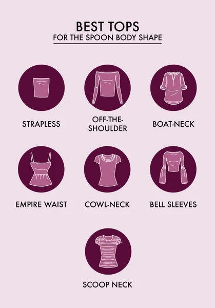
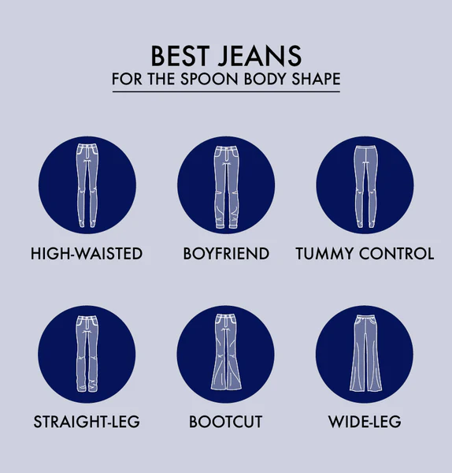
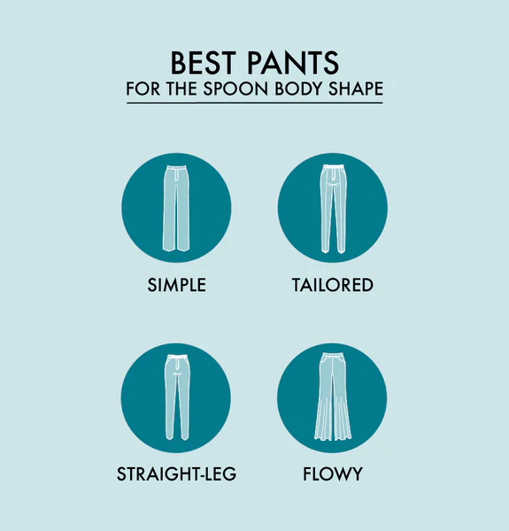
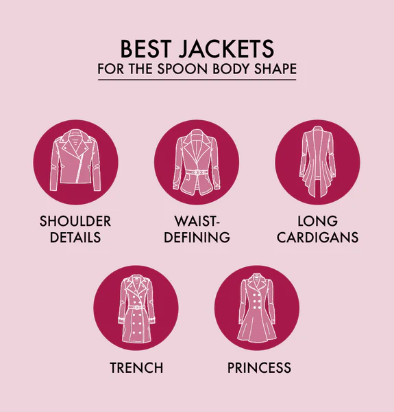
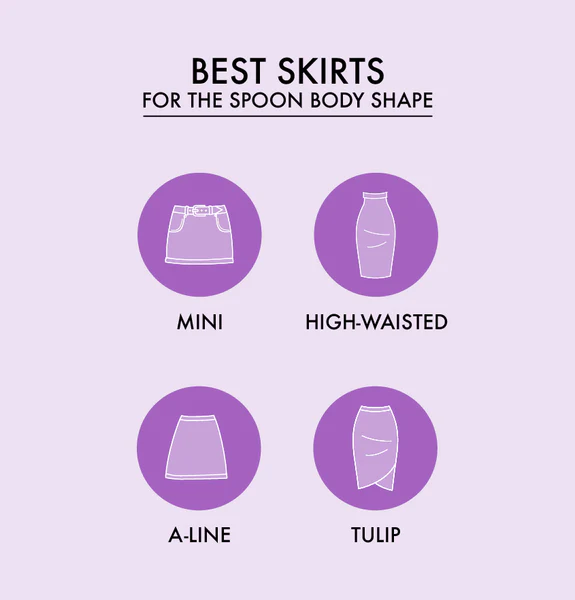
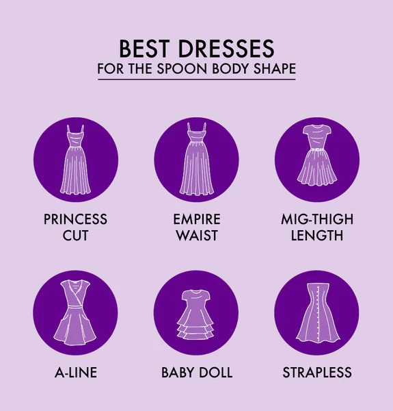
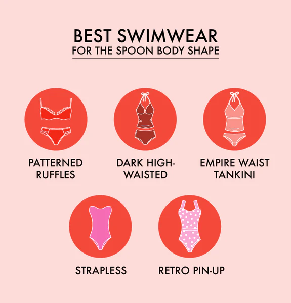

TOPS
Tops for spoon body shapes should focus on the neckline to draw attention to your shoulders, arms, and torso. Some great options for tops and blouses include:
| Top Types | Style Describes |
|---|---|
| Strapless | A strapless top looks fantastic as it draws attention to your upper body. |
| Boat-Neck | Highlight your collarbone with a broad boat-neck top that's wide and round. |
| Off-the-Shoulder | Off-the-shoulder tops draw attention to your shoulders, collarbone, and neckline. |
| Empire Waist | To balance your shape and create volume, consider an empire waist or peplum top. |
| Cowl-Neck | Known as cowl-necks, tops with a loose draping collar look great across your shoulders. |
| Bell Sleeves | Bell sleeves are fitted at the shoulder and flare at the elbow to enhance the bustline. |
| Scoop Neck | Scoop necks are broad and rounded, drawing attention to your collarbone area. |
JEANS
When choosing women's jeans, the best spoon body shape jeans flatter your figure and create a balance with other parts of your body. Choose jeans without a lot of decoration. Some great options for this include:
| Jean Types | Style Describes |
|---|---|
| High-Waisted | High-waisted jeans elongate your legs and even out the appearance of your hips and upper body. |
| Boyfriend | Fun, loose-fitting "boyfriend" jeans are a great trend and look fantastic on your body type. |
| Tummy Control | Tummy control jeans provide the opportunity to further define your waist to help you emphasize your upper half. |
| Straight-Leg | Choose a straight-legged pair of jeans to create an even line down your body. |
| Bootcut | Bootcut jeans have a slight flare at the calf, which can flatter your shapely legs. |
| Wide-Leg | A wide-leg pair of jeans works well with the fitted tops that flatter spoon body types. |
PANTS
Jeans aren't great for every occasion, so having a few pairs of pants that fit you well is essential. From casual to professional, here are a few ideas:
| Pant Types | Style Describes |
|---|---|
| Simple Details | Too much detail, such as pleats or buttons at the hips, moves the focus from your top to your hips and can make that balance disappear. Aim to keep things simple on the front of your pants. |
| Tailored | Tailored pants are typically partway between skinny and straight-leg styles and have a businesslike appearance to them. They often sit higher on the waist and can create a straighter line between your top and bottom. |
| Straight-Leg | Like with jeans, a straight leg without a lot of detail keeps your lower half neutral. |
| Flowy | You can also wear flowy pants, such as palazzo pants, with a simple top to create a great casual look. |
JACKETS
Outerwear is an essential part of your wardrobe whenever there's a chill in the air. Your spoon body shape looks great in several styles of jackets and coats, including:
| Jacket Types | Style Describes |
|---|---|
| Princess | Princess coats are the A-line dress of coats, mirroring your body’s natural shape in an exceptionally stylish way. |
| Shoulder Details | When choosing a jacket, like denim or leather, pick something with shoulder details. |
| Waist-Defining | Choose a coat with a defined waistline with or without a tie or belt. |
| Trench | A classic trench coat is always a good look when the weather turns colder. |
| Long Cardigan | If you need a lighter jacket, choose a long cardigan to create a line throughout your upper and lower half. |
SKIRTS
You're lucky when it comes to picking out skirts for your spoon body type. You can rock any kind of skirt, particularly in a simple, solid color, such as:
| Skirt Types | Style Describes |
|---|---|
| Miniskirt | Play up your shapely legs by going with a short skirt. |
| High-Waisted | Skirts with high waistlines can help create balance. |
| A-Line | An A-line skirt is a simple, classic choice that provides just enough volume at the hips. |
| Tulip | This 1950s-style skirt starts high on your waist and has a tapered hemline, allowing you to show off your curvy hips while still emphasizing your top. |
DRESS
Everyone loves a fabulous dress. Choosing the perfect spoon body shape dress can allow you to feel confident out on the town or at an event. Use these same guidelines when shopping for jumpsuits, bodysuits, and rompers!
| Dress Types | Style Describes |
|---|---|
| A-Line | A-line dresses are fitted to your upper half and flare just enough at the hips to accentuate your figure. |
| Princess Cut | This doesn't mean Cinderella's ball gown, but this dress has seams on either side of the bust to draw attention to your upper body. |
| Empire Waist | An empire waist dress is fitted across your shoulders and bust with a waistband just under your bustline to emphasize your narrower upper body and balance out your hips and legs. |
| Baby Doll | Baby doll dresses are shorter, letting you highlight your legs, and typically hug your upper half while flaring out as they go down. It's like they were made specifically for spoon body shapes! |
| Mid-Thigh Length | Choose a dress that falls between mid-thigh and your knees. This shows off your great legs. |
| Strapless | You can stun at a formal event by wearing a strapless dress that highlights your collarbones, shoulders, and arms. |
SWIMWEAR
For a great day at the beach or pool, choose the most flattering swimwear for spoon body type. At the pool or the beach, these are great looks:
| Dress Types | Style Describes |
|---|---|
| Patterned Ruffled Top | Draw the eye up by choosing a bikini top with bold patterns and ruffle details. |
| Strapless | To show off your shoulders and arms, you can rock a strapless one-piece suit or bandeau top. |
| Dark High-Waisted Bottoms | Let your fabulous top be the star by choosing a dark-colored, high-waisted bikini bottom. |
| Retro Pin-Up Style | Your spoon body shape looks stunning in retro pin-up style swimsuits in fun color combinations. |
| Empire Waist Tankini | Choose a tankini with an empire waist that flares over the midriff. |
SHOES AND ACCESSORIES
The shoes and accessories you choose are the finishing touches on any outfit. Here are a few ideas to consider when you're finishing your shopping.

| Shoe and Accessor Types | Style Describes |
|---|---|
| Pointed-Toe Shoe | A classic pointed-toe shoe in a neutral color will enhance the shape of your legs. |
| Wedges | Since you have amazing legs, show them off wearing a pair of wedge sandals or shoes. |
| Chunky Earrings | Draw the eye up to your shoulders and face by finishing your outfit with a pair of statement earrings. |
| Shapewear | Shapewear is never a requirement, but if you want to create a smoother transition between your top and bottom or even out the two halves, you can opt to wear some under your favorite new look. |